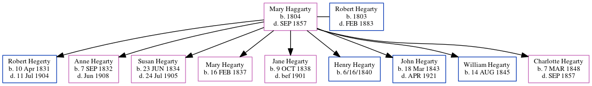

Mary Hegarty (née Haggarty) 1804 - 1857
[ Home ] | [ Calendar ] | [ Surnames Index ] | [ Family History ]Mary Haggarty, the 4 times great-grandmother of Michele Copp (née Phillips), was born in Ireland in 1804 and had 9 children with Robert Hegarty: Robert, Anne, Susan, Mary, Jane, Henry, John, William and Charlotte.
She died in Sep 1857.
Children
- Robert was born on Apr 10, 1831
- Anne was born on Sep 7, 1832
- Susan was born on Jun 23, 1834
- Mary was born on Feb 16, 1837
- Jane was born on Oct 9, 1838
- Henry was born on 6/16/1840
- John was born on Mar 18, 1843
- William was born on Aug 14, 1845
- Charlotte was born on Mar 7, 1848
Family Tree
Generated by ged2site. Last updated on Jun 24, 2024